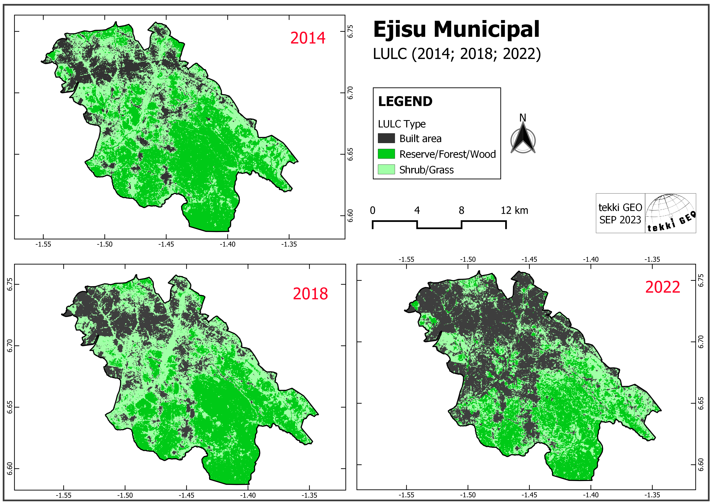
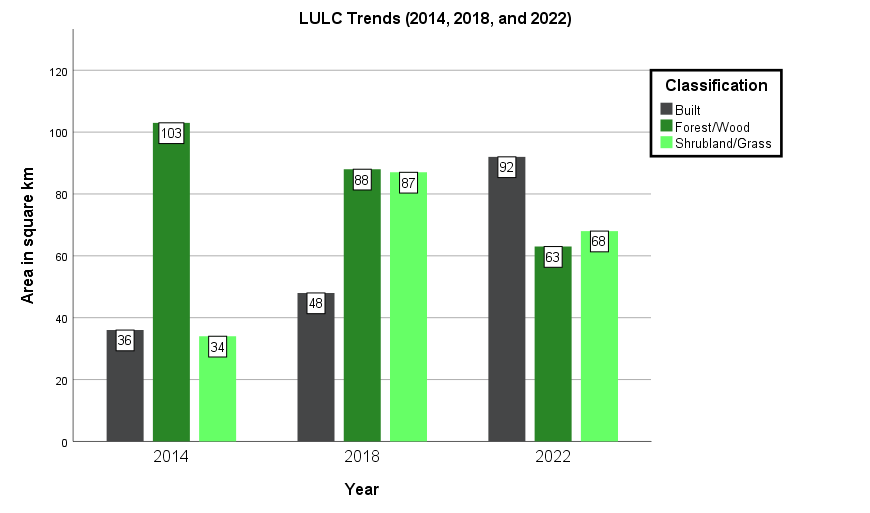
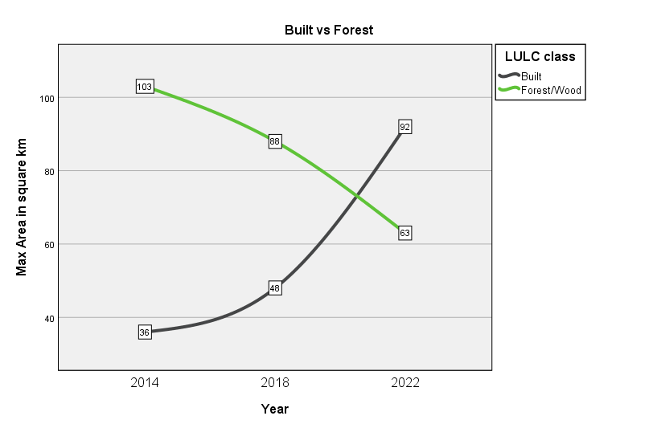

Abdul-Fatawu Yakubu
Sep. 2023
Declaration
I declare that this project is an original work, with all external information/resources appropriately cited in-text and referenced. This project is the creation of tekki GEO
Important
All project data and essential files, including bandsets, shapefiles, and training data, are accessible for download on our website. We invite you to freely download and utilize these resources for educational purposes and beyond.
Keywords
Land use, land cover, trend, autocorrelation, landsat, data training, algorithm, spatial analysis, Ejisu
Abbreviations
LULC - Land use and Land cover
SCP - Semi-Automatic Classification Plugin
ROI - Region Of Interest
QGIS - Quantum Geographic Information System
USGS - United States Geological Survey
NOAA - National Oceanic and Atmospheric Administration
Land Use and Land Cover (LULC) together describe the physical and human characteristics of the Earth's surface. As articulated by NOAA (2023), ‘land use’ reflects how people use the land, ‘land cover’ describes the physical land type, such as forest or open water. These intertwined aspects encompass a comprehensive understanding of the dynamic interactions between human activities and the natural environment. The activities of man including urbanization, industrial activities, land restoration, etc., coupled with natural phenomena, like erosion, wildfire, flood, and others, could bring about a tremendous LULC changes in a given area. These changes can affect man and the environment. They can have specific and cumulative effects such as air and water quality, climate change, waste generation, extent and quality of wildlife habitat, and human health (EPA, 2023).
This article delves into LULC trends over an 8-year span, focusing on four-year intervals (2014, 2018, and 2022). The study looked into three pivotal LULC classifications; built environment, forests, and savannah/shrublands, to discern and illustrate the dynamic changes that have unfolded within the study region. It aims to analyse the LULC trends in Ejisu Municipal, with close attention paid to the degree of urbanization within this region over the 8-year period.
Ejisu Municipal is one of the 43 districts in the Ashanti Region, and also one of the fastest-growing urban areas in the region. Its capital, Ejisu, was reported to be the fastest growing city in Ghana (Ghana Statistical Service [GSS], 2012, as cited in Cobbinah & Aboagye, 2017). It is characterized by a semi-deciduous forest cover, bi-modal rainfall pattern, and wet semi-equatorial climate (Ministry of Food and Agriculture [MOFA], n.d.).
The Ejisu Municipal area stands at the crossroads of urban development and ecological preservation, poised for significant change. This study endeavours to quantify and comprehend these impending changes, fostering a foundation for sustainable development and enlightened environmental management.
The analysis utilized Landsat 8 imagery for the years 2014 and 2022. Due to the unavailability of Landsat 8 data for the entire study region in 2018, Landsat 7 (ETM+) data was used. All datasets were at a 30-metre spatial resolution and sourced from the USGS website.
The primary platform for spatial analysis and visualization was Quantum GIS (QGIS), with the Semi-Automatic Classification Plugin playing a central role in data processing. Further, the IBM Statistical Package for the Social Sciences (SPSS 25) was used for statistical calculations and visualizations.
Before analysis, the data underwent preprocessing. Landsat 8 data from 2014 and 2022 were mostly free of critical issues. However, the 2018 data had challenges, including cloud cover and no-data regions due to spatio-temporal inconsistencies. These were addressed by performing cloud masking to eliminate the cloud values that could interfere with the analysis. Next, the no-data regions were filled using an algorithm that interpolated for no-data values using neighbouring pixels at a given maximum pixel distance. This was done to achieve a complete data coverage.
The SCP played a central role in the analysis, facilitating the training of our model. This was achieved by defining regions of interest (ROIs) and establishing signatures for each of the three key classes (built, forest, and savannah/shrubland), separately for each year. Notably, each successive year featured a unique training sample and spatial distribution. Utilizing this ample and meticulously trained data, a classification algorithm was deployed. The analysis used the 'Maximum Likelihood' method.
The outcome was a refined classification, and the resulting bands underwent further processing to enable effective visualization and presentation of the results. This also included calculating for areal coverages, percentages, and juxtaposing, using the SPSS package.
The results of the analysis are presented in the form of maps and charts. Figure 1 illustrates the Land Use and Land Cover (LULC) trends within the municipal area, offering a visual representation of the transition from forest and savannah to urban/built environments. The total municipal area spans approximately 223 square kilometres. Within the selected time frame, a discernible trend emerges: urbanization has exhibited substantial growth, particularly in the more recent period from 2018 to 2022. In 2014, urbanization covered the smallest portion of the area, 36 square km (16.1%), but by 2022, it had become the dominant classification, covering about 92 square km (41.3%) of the total area. This increase resulted in a great loss of the forest cover.
Figure 1: LULC trends map
Shrublands also underwent notable changes. Between 2014 and 2018, the area covered by savannah/shrublands increased sharply from around 34 square kilometres to approximately 87 square kilometres. However, it saw a decline of about 19 square kilometres in 2022, ultimately accounting for approximately 68 square kilometres of the total municipal area. Additionally, as urbanization transformed forested regions, parts of the forest also transitioned into savannah/shrubland. Further statistical details are presented in Figure 2.
Figure 2: LULC Trend

A central transformation observed in the region is the conversion of forested areas into the built environment. A strong negative autocorrelation is evident between these two LULC types. Forested regions experienced a substantial reduction as urbanization surged. The data trajectories suggest that urbanization is poised to continue encroaching upon forested regions in the future.
This trend aligns with the findings of Amoah et al. (2012) in their land use modelling of the Ejisu-Juaben district, where they predicted the LULC of 2020 using Landsat data from 1989 and 2007. They observed a significant increase in settlements/bare land (built), from 368.1 hectares in 1989 to 1637.55 hectares in 2007, with an estimated 2199.51 hectares by 2020. Conversely, forested areas decreased from 8019.63 hectares in 1989 to 5252.67 hectares in 2007, with an estimated value of 3551.22 hectares by 2020. Figure 3 provides a change trajectory of the relationship between built and forested areas from this study.
Figure 3: Built vs Forest

The study looked at the trends in land use and land cover (LULC) in the Ejisu Municipal. It revealed a significant transformation in Ejisu Municipal's LULC over the past 8 years (2014 to 2022). Urbanization emerged as the dominant trend, transitioning vast forest and savannah/shrubland areas into built environment. This urbanization trend, with a remarkable growth rate from 2018 to 2022, poses critical implications for the municipal's physical environment and inhabitants, necessitating proactive measures.
Hence, the study recommends embracing sustainable urban planning, emphasizing green spaces and infrastructure. Concurrently, promoting environmental conservation through afforestation and reforestation; formulation and enforcement of balanced policies that account for the long-term ecological and societal repercussions of urbanization. These collective actions not only address the immediate challenges but also contribute to the achievement of Sustainable Development Goals (SDGs), particularly SDG 11 (Sustainable Cities and Communities), SDG 13 (Climate Action), and SDG 15 (Life on Land).
The analysis agglomerated the LULC classes and did not subdivide into farmlands, wetlands, bare soil, etc. It also considered a single municipal in the region, and not the whole expanse of the region, or an even different spatial context. Future projects should look into deploying and presenting a rich and undivided classification. Different spatial locations should also be considered, and analysis could be performed on multiple spatial regions for comparative analysis.